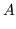

HTK format files consist of a contiguous sequence of samples preceded by a header. Each sample is a vector of either 2-byte integers or 4-byte floats. 2-byte integers are used for compressed forms as described below and for vector quantised data as described later in section 5.14. HTK format data files can also be used to store speech waveforms as described in section 5.11.
The HTK file format header is 12 bytes long and contains the following data
nSamples - number of samples in file (4-byte integer)The parameter kind consists of a 6 bit code representing the basic parameter kind plus additional bits for each of the possible qualifiers . The basic parameter kind codes are
sampPeriod - sample period in 100ns units (4-byte integer)
sampSize - number of bytes per sample (2-byte integer)
parmKind - a code indicating the sample kind (2-byte integer)
0 WAVEFORM sampled waveformand the bit-encoding for the qualifiers (in octal) is
1 LPC linear prediction filter coefficients
2 LPREFC linear prediction reflection coefficients
3 LPCEPSTRA LPC cepstral coefficients
4 LPDELCEP LPC cepstra plus delta coefficients
5 IREFC LPC reflection coef in 16 bit integer format
6 MFCC mel-frequency cepstral coefficients
7 FBANK log mel-filter bank channel outputs
8 MELSPEC linear mel-filter bank channel outputs
9 USER user defined sample kind
10 DISCRETE vector quantised data
_E 000100 has energyThe _A qualifier can only be specified when _D is also specified. The _N qualifier is only valid when both energy and delta coefficients are present. The sample kind LPDELCEP is identical to LPCEPSTRA_D and is retained for compatibility with older versions of HTK. The _C and _K only exist in external files. Compressed files are always decompressed on loading and any attached CRC is checked and removed. An external file can contain both an energy term and a 0'th order cepstral coefficient. These may be retained on loading but normally one or the other is discarded5.8.
_N 000200 absolute energy suppressed
_D 000400 has delta coefficients
_A 001000 has acceleration coefficients
_C 002000 is compressed
_Z 004000 has zero mean static coef.
_K 010000 has CRC checksum
_O 020000 has 0'th cepstral coef.
All parameterised forms of HTK data files consist of a sequence of vectors. Each vector is organised as shown by the examples in Fig [*] where various different qualified forms are listed. As can be seen, an energy value if present immediately follows the base coefficients. If delta coefficients are added, these follow the base coefficients and energy value. Note that the base form LPC is used in this figure only as an example, the same layout applies to all base sample kinds. If the 0'th order cepstral coefficient is included as well as energy then it is inserted immediately before the energy coefficient, otherwise it replaces it.
For external storage of speech parameter files, two compression methods are
provided. For LP coding only, the IREFC parameter kind exploits the
fact that the reflection coefficients are bounded by and hence they can
be stored as scaled integers such that is stored as and
is stored as  . For other types of parameterisation, a more general
compression facility indicated by the
_C qualifier is used.
HTK compressed parameter files consist of a set of compressed parameter
vectors stored as shorts such that for parameter
. For other types of parameterisation, a more general
compression facility indicated by the
_C qualifier is used.
HTK compressed parameter files consist of a set of compressed parameter
vectors stored as shorts such that for parameter 
|  | |||
When a HTK tool writes out a speech file to external storage, no further signal conversions are performed. Thus, for most purposes, the target parameter kind specifies both the required internal representation and the form of the written output, if any. However, there is a distinction in the way that the external data is actually stored. Firstly, it can be compressed as described above by setting the configuration parameter SAVECOMPRESSED to true. If the target kind is LPREFC then this compression is implemented by converting to IREFC otherwise the general compression algorithm described above is used. Secondly, in order to avoid data corruption problems, externally stored HTK parameter files can have a cyclic redundancy checksum appended. This is indicated by the qualifier _K and it is generated by setting the configuration parameter SAVEWITHCRC to true. The principle tool which uses these output conversions is HCOPY (see section 5.16).